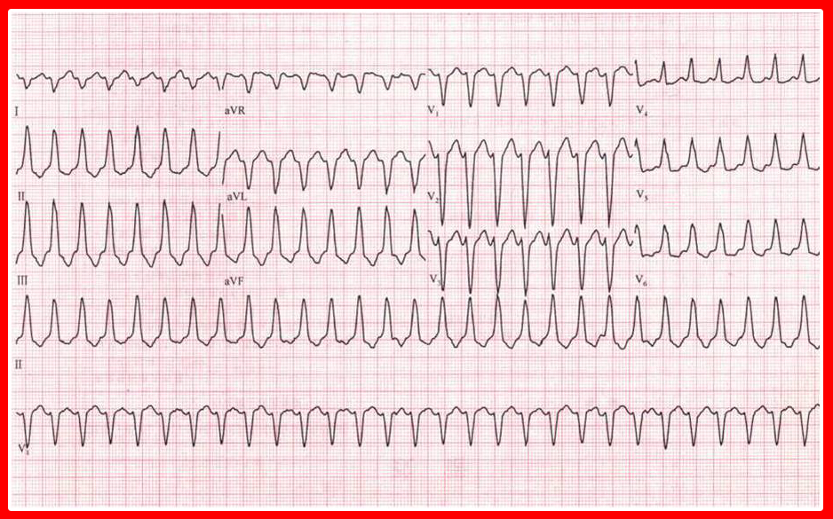
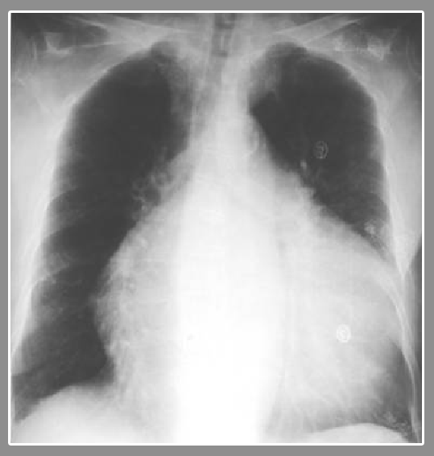
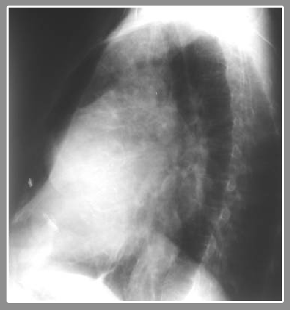
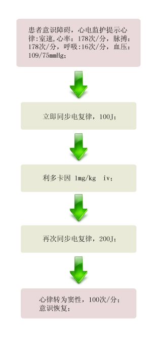

【病例摘要】
- 现病史：患者，女性，48岁，阵发性心悸、气促伴胸闷6个月，加重伴晕厥1次。患者6个月前出现劳累后阵发性心悸、胸闷，每次持续约数分钟，休息后好转，未就诊。半小时前劳累后又出现心悸、胸闷、头晕、出冷汗，并晕厥一次。
- 既往史：既往无慢性病史，否认风湿病史。无烟酒嗜好。
- 查体：T 37.7℃ BP 109/75mmHg P 178次/分，R 16次/分，意识模糊，口唇紫绀，两肺呼吸音稍粗，心界不大，心率178次/分，律齐，第一心音强弱不等，未及杂音。腹软无压痛。

【辅助检查】
- 心电图:
 - 胸片:
 - 超声心动图:
【诊断】
- 扩张性心肌病 心律失常 室性心动过速
【事件】
